The man running across the neighborhood park had escaped three times and was now asking to do it again.
Neet found this suspicious.
A film crew had arrived to shoot a scene for a big Bollywood movie. The park was transformed into a set with towering cameras, bright lights, and actors in glamorous costumes. Heather, curious about the commotion, had brought Neet and Buddy to see the spectacle.
“Remember, you two, we’re just here to watch,” she said as they approached the set. “No causing trouble.”
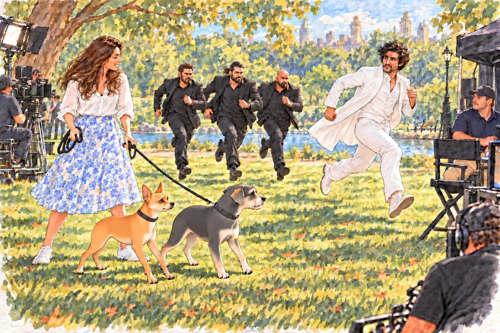
Neet’s ears perked up. Someone in a magnificent jacket ran past, pursued by three people who were apparently willing to chase him but unwilling to catch him. Buddy found a spot beside Heather where a coil of cable would not catch his feet. He could see the actors from there, and he intended to keep it.
A crew member set a folding chair directly in front of him. Buddy moved around it. The crew member moved the chair. Buddy moved again. They finally arrived at an arrangement in which the man had a chair and Buddy had his feet.
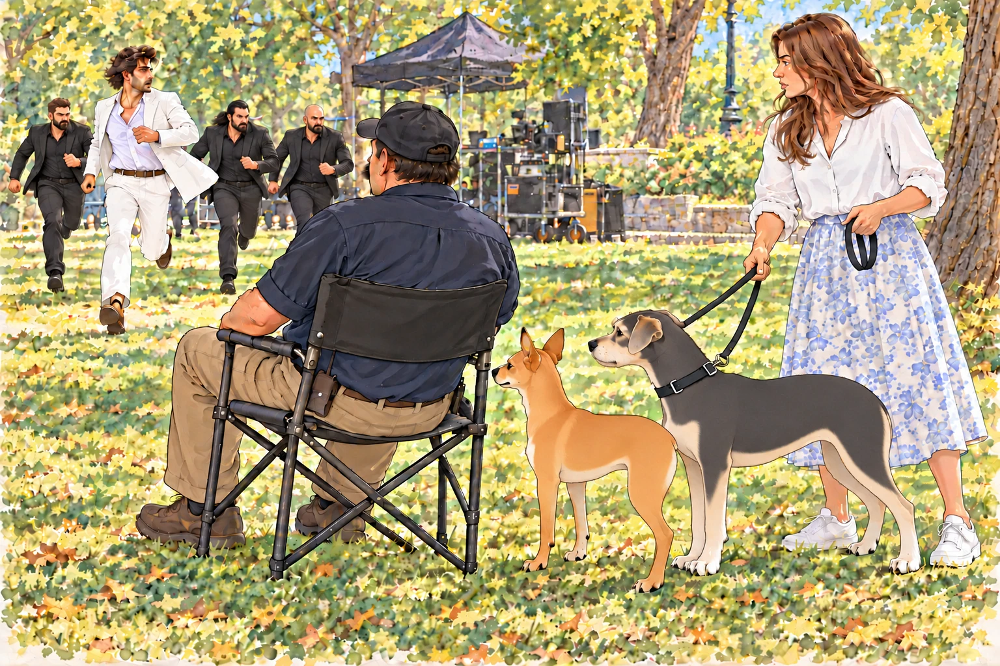
Buddy leaned left. The man leaned left to speak to someone.
Buddy leaned right. The man bent to retrieve his water bottle.
“An excellent performance,” Buddy murmured. “I believe the chair wins.”
From the perimeter of the set, Neet’s nose twitched as he picked up the scent of fresh samosas from the crew’s snack table. He tugged at his leash, but Heather held firm. “Not now, Neet,” she said. “Behave yourself.”
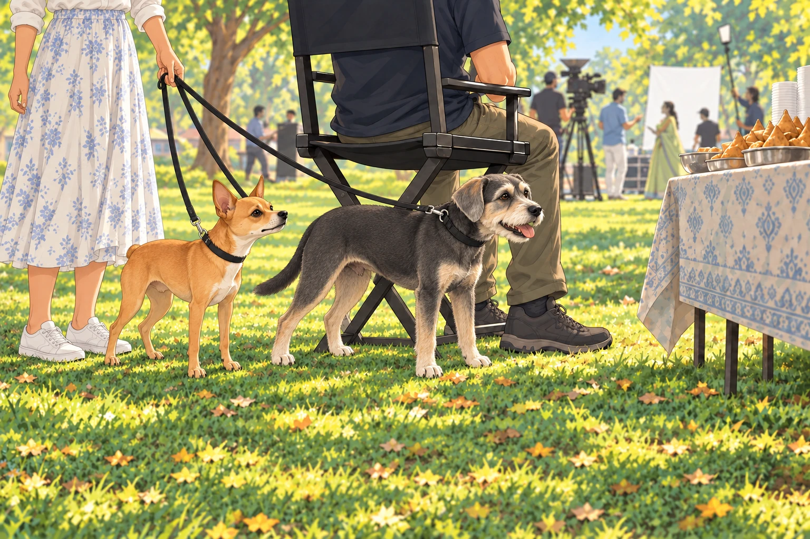
Buddy sat down beside the chair. Through its legs he could see the actor’s shoes. The shoes had now escaped four times.
The director called everyone back to their places. A woman pressed a strip of tape onto the path. The actor stood on it, was moved a little to the left, and was moved back again.
“They’ve caught him,” Neet whispered.
The woman stepped away. The actor ran.
“They’ve lost him.”
“He keeps coming back,” Buddy said. “I don’t think he wants to escape.”
“He keeps escaping in the wrong direction.”
On the next take, one pursuer stopped before the others. The director put his hands on his head. Everybody walked back to the beginning.
Neet stared. At the Dog Games, once you crossed the finish line, you were allowed to be finished. This operation needed supervision.
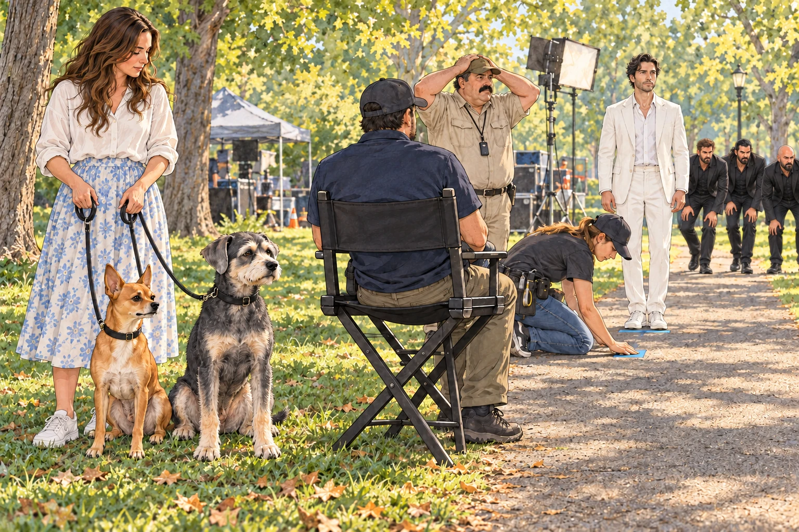
As the director called for another rehearsal, Neet let out an excited bark, startling the crew.
“Cut!” the director shouted, turning to glare in their direction.
Heather blushed and quickly apologized. “Sorry! We’ll keep quiet.” She crouched and touched Neet’s chest. “You’re watching, remember?”
Neet watched very hard. Nobody caught the man. Nobody ate a samosa. The waste was extraordinary.
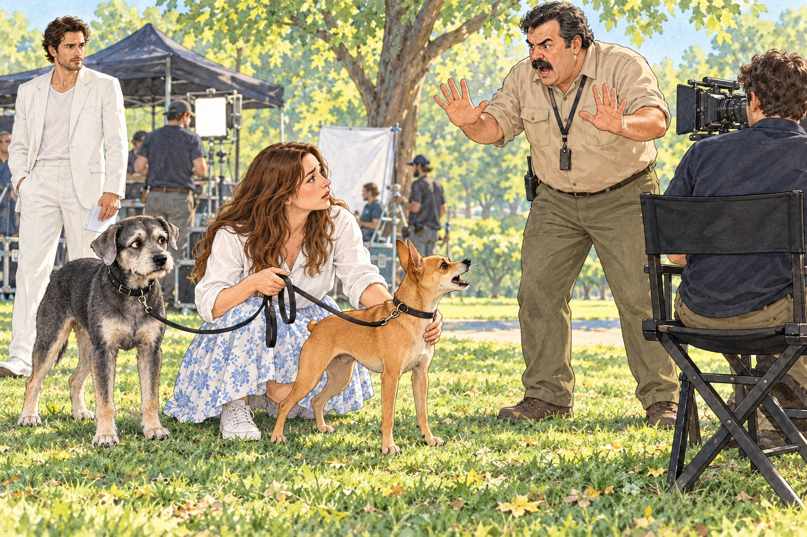
As the actors reset, a prop dog was brought onto the set—a large, plush golden retriever meant to appear in the background. To Neet, however, this was no prop. It was an intruder.
The retriever did not blink.
“Very confident,” Neet muttered.
“Very washable,” said Buddy.
The prop assistant lowered it onto the grass. Neet sniffed toward it. No warm dog smell. No greeting. Its expression remained unbearably pleased with itself.
“They’ve given him a better view than us.”
Buddy looked at the retriever, then at the chair.
“That part is true.”
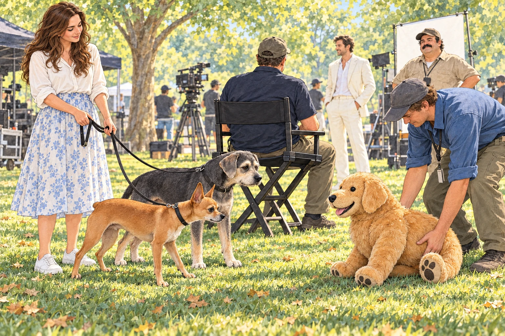
With a fierce growl, Neet slipped out of his collar and bolted onto the set.
“Neet, no!” Heather shouted.
She gathered Buddy’s lead close and hurried after Neet, but he was already barking furiously at the stuffed dog, circling it as if preparing for battle.
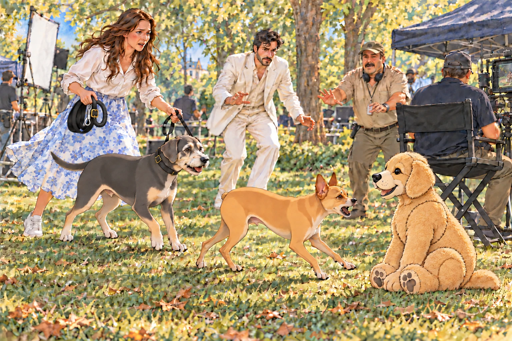
The crew erupted into laughter as Neet launched himself at the plush dog, tugging at its fake fur and growling dramatically. The retriever toppled. Neet kept tugging. It continued to smile from the ground.
The lead actor, struggling to stay in character, burst out laughing. “Is this part of the scene?” he asked, wiping tears from his eyes.
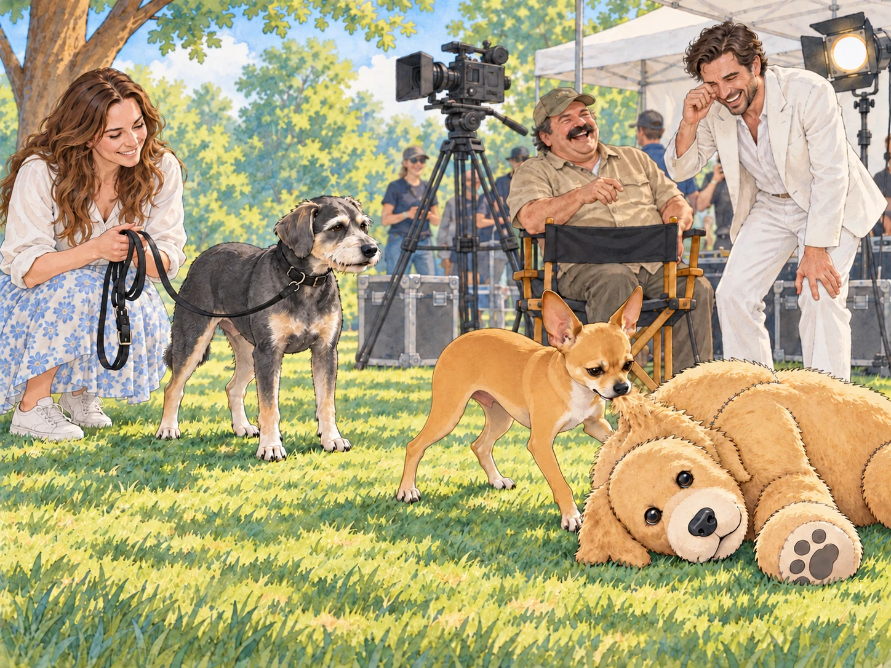
Neet backed away, waiting for the retriever to rise. Heather reached him and scooped him up beside the toppled prop. “I’m so sorry! He thought it was real.”
Neet stretched his neck to inspect his opponent over her arm.
“Playing dead.”
“He’s committed,” Buddy said.
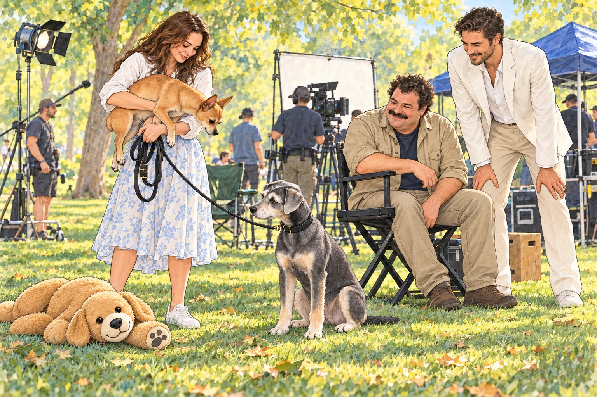
The director, a stout man with a thick mustache, approached them with a grin. “Your dog has quite the personality. Maybe he’s got star potential.”
Heather blinked. “You mean…?” She looked down at Neet. “You’ve been here five minutes. I’ve apologized twice.”
“Let’s put him in the scene,” the director said. “A little unscripted chaos could add some charm.”
Heather glanced at the toppled retriever. Then she looked at the busy path and the equipment beside it.
“Show me where he’d run.”
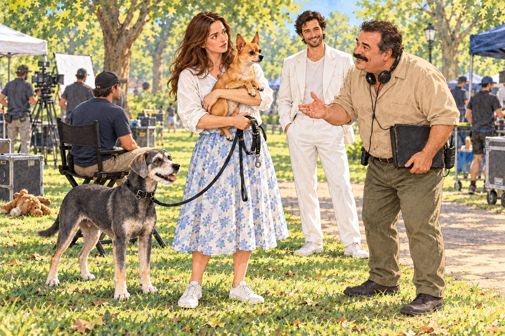
The handler walked her along the proposed route while she carried Neet and Buddy followed on his lead. The crew cleared the path. Heather chose a place beyond the finish where Neet could see her, and the handler checked the route with her before they agreed to try it.
Neet inspected everything from her arms.
“Finally. A proper briefing.”
Heather smiled at the actor. “He may need one more than you do.”
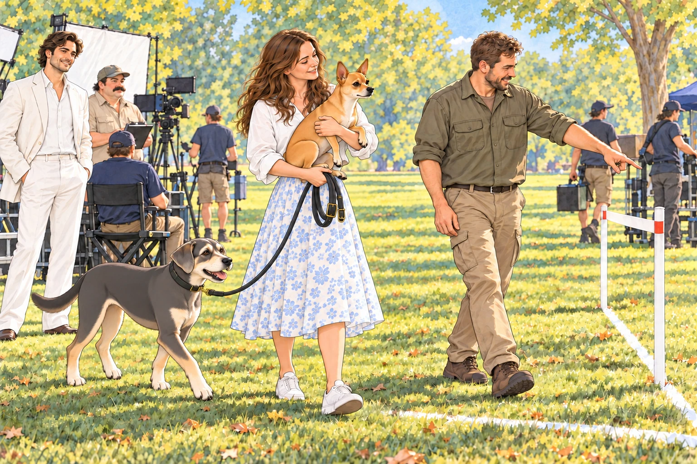
The crew improvised a new part: the lead actor would be chased not only by stunt performers but also by an overzealous chihuahua. The handler took Neet to the start, leaving his escaped collar and attached lead with Heather. The prop assistant carried the retriever away from the route. Neet watched it retreat without moving a muscle.
“Useful rehearsal,” he told Buddy. “The enemy leaves.”
Buddy had a much better view here. Unfortunately, the folding chair was still back at their original spot. The new patch of grass was in full sun, and the actor stood directly between him and Neet.
Buddy edged sideways. Heather moved with him, keeping his lead clear of the route. The actor edged sideways too, following the handler’s instructions.
Buddy sighed. “He’s been trained by the chair.”
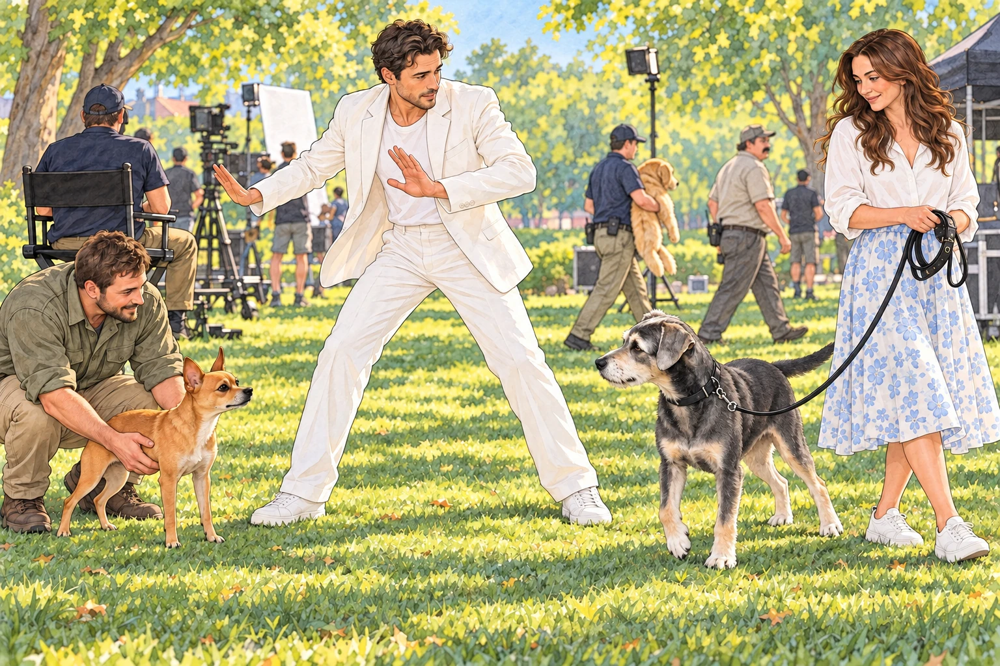
The handler let Neet look down the path toward Heather. The actor jogged a few steps. Neet sprang after him, delighted that somebody had finally authorized pursuit.
Buddy rose. He could see Neet now, bouncing into the chase with his ears up and his whole attention fixed on the actor’s flying shoes.
For a moment Buddy forgot about watching.
“Come on, Neet!” he barked.
Neet looked toward him. Buddy took an eager step; Heather’s hand settled on his shoulder before he reached the edge of the path. Neet veered straight toward them, abandoning the actor halfway through the rehearsal.
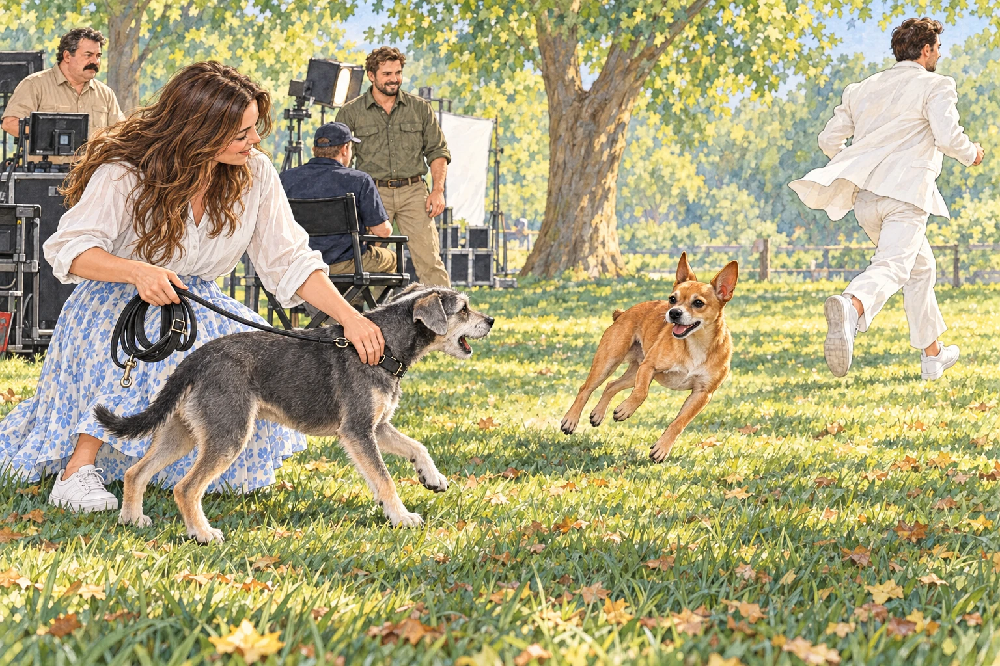
The actor continued to the end, alone. Then he turned around.
“That was the nicest escape I’ve had all afternoon.”
The handler came to collect Neet. Heather rubbed Buddy’s shoulder and laughed softly.
“Oh, Buddy. You were doing so well at being the audience.”
Buddy sat down. He had wanted to see the whole chase. He had stopped it himself.
Neet stood beside him, very satisfied.
“You called for reinforcements.”
“I was cheering.”
“Same urgency.”
Buddy looked at the long empty stretch the actor had just run. “He was meant to finish.”
“He did finish. I let him.”
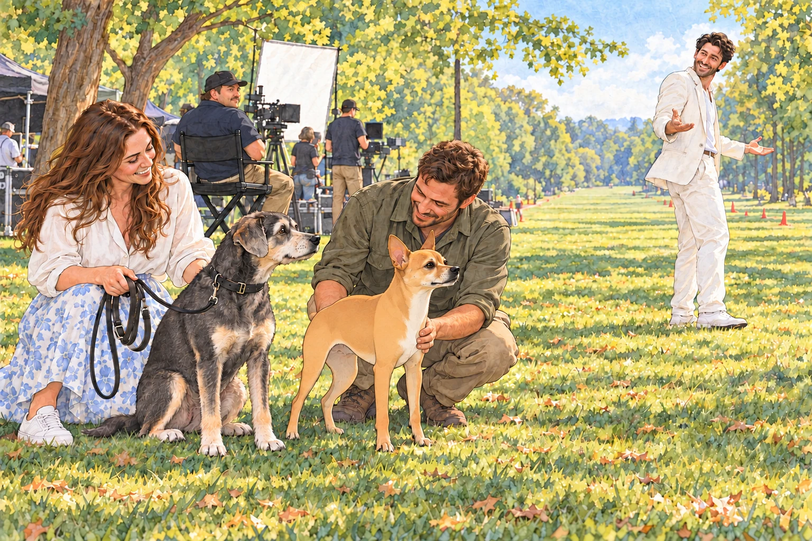
They returned Neet to the start. Buddy lay down and tucked his paws beneath him. This time he would watch quietly, provided everyone would stop standing in the way.
The chair’s occupant got up to help reposition the camera. Another crew member reached for the empty chair.
Buddy was on his feet at once.
He looked at the chair, looked at Heather, then moved as far toward it as his slack lead allowed. His front paws settled. The rest of him waited for her decision.
Heather followed his gaze.
“May we borrow that?” she asked.
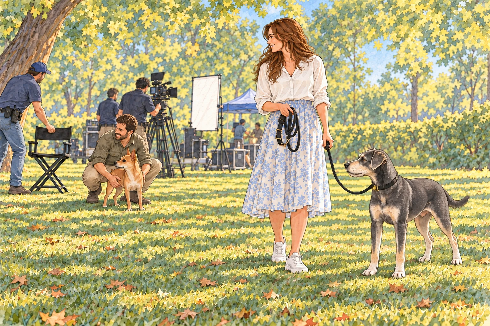
The crew member carried it over. Heather showed him a spot beside her, outside the end of the route. Buddy waited while all four chair legs touched the grass. Then he checked the shade underneath.
He could see the start. He could see the finish. Neet would run right past him to Heather.
Buddy lowered his head to look from one to the other.
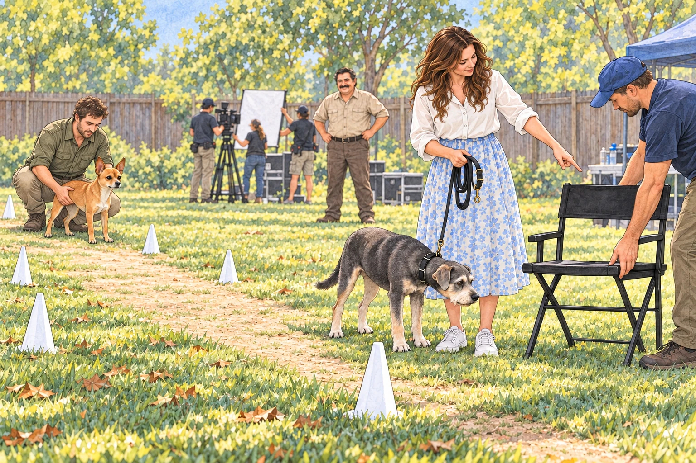
The director noticed. “Does this one want a part too?”
Buddy sat very upright.
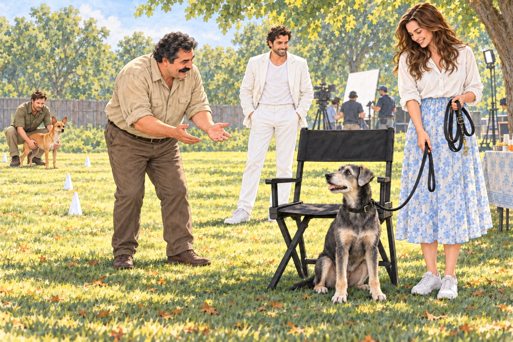
Neet turned from the starting mark. “You’ll need to run.”
Buddy looked at the chair again. The breeze passed underneath it. All the running people were standing in the sun.
He stepped into the shade.
Heather’s smile widened. “I think he’s found his part.”
Buddy was pleased. For once, someone had asked before assigning him an obstacle course.
The handler crouched beside Neet, pointed down the route, and let him find Heather. She raised a hand. Neet’s ears aimed toward her.
The actor stretched his legs and peered back at him. “Please remember I’m only pretending to be chased.”
Neet lowered his front end, ready to spring.
“A very convincing performance,” Buddy said.
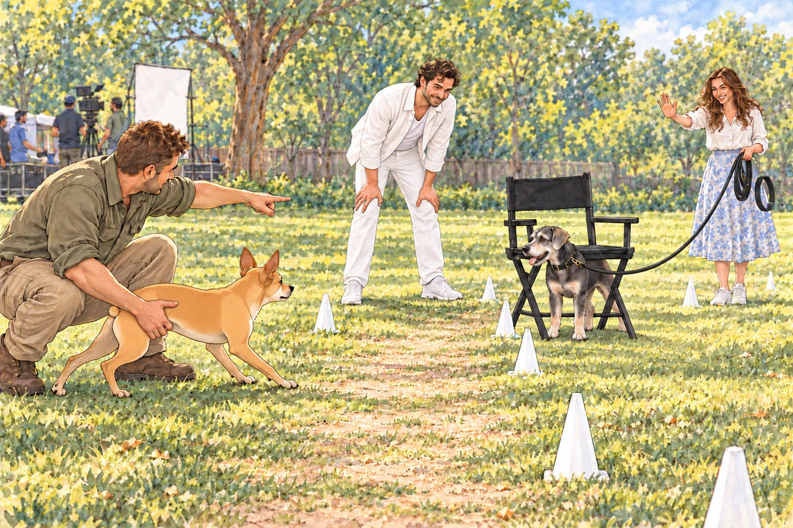
The handler held Neet until the actor and stunt performers were moving. When the cameras rolled and Neet was released, he gave it his all. He barked ferociously as he chased the actor through the park, his tiny legs moving like pistons.
Buddy rose as the chase came toward his viewing spot. For a moment he considered joining it. The actor was running beautifully. Neet was running even better. Buddy could be there in two steps.
Then he saw Heather waiting at the end of the marked route and stayed where he was. Someone ought to let the actor finish.
As Neet approached the chair, Buddy kept his mouth shut and planted himself between its legs. At last, the view was entirely his.
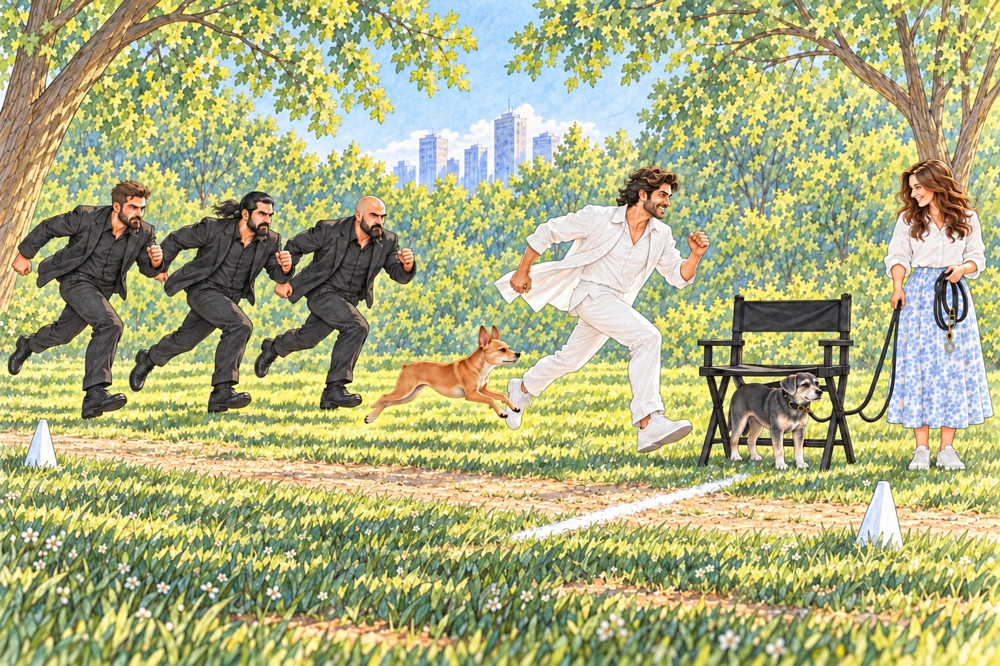
The shoes continued past. Neet followed them, completed the route, and ran into Heather’s waiting hands.
“Cut! That was perfect!” the director said, clapping his hands. “Let’s keep it!”
The actor bent over, hands on his knees. Neet waited for him to walk back to the start. When he didn’t, Neet gave one questioning bark.
“No,” Heather said. “He’s caught enough.”
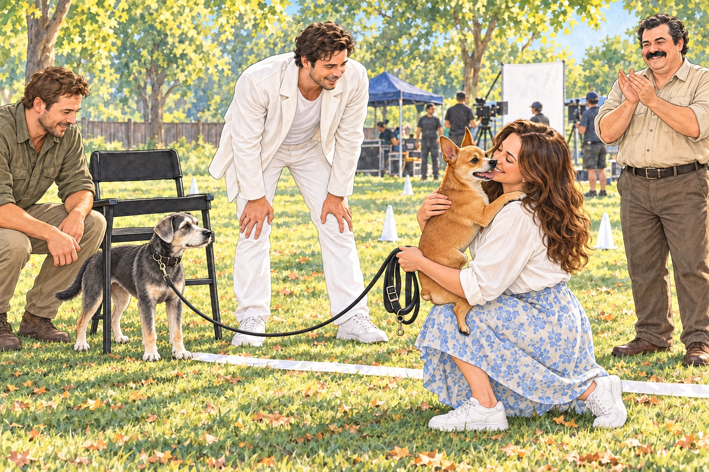
The actor sat on the grass to recover. Buddy leaned out of the shade. At last, they were the same height.
“Your friend’s fast,” the actor told him.
Buddy wagged his tail. He had seen the entire thing, including the finish. He had also retained his seat. This was an unusually successful afternoon.
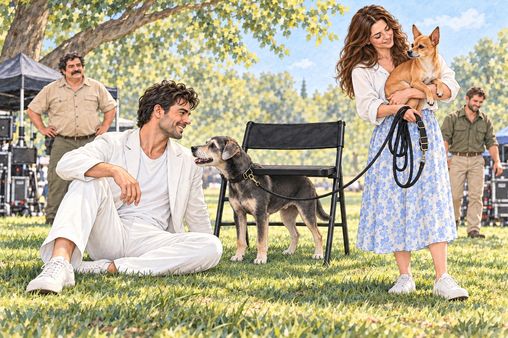
After the shoot wrapped, Neet was showered with praise. The lead actor knelt down to pet him. “You stole the show, little guy,” he said, scratching behind Neet’s ears.
Heather couldn’t help but smile as Neet basked in the attention. “Well, I guess he’s a natural performer.”
She fitted his collar more snugly before clipping his lead back on. Then she held out her hand to Buddy. He emerged from beneath the chair and pressed his chin into it.
“Good audience,” she said.
The chair went back to the crew. Buddy watched it go without pursuing. A good view was difficult to find, but he could leave one after the show was over.
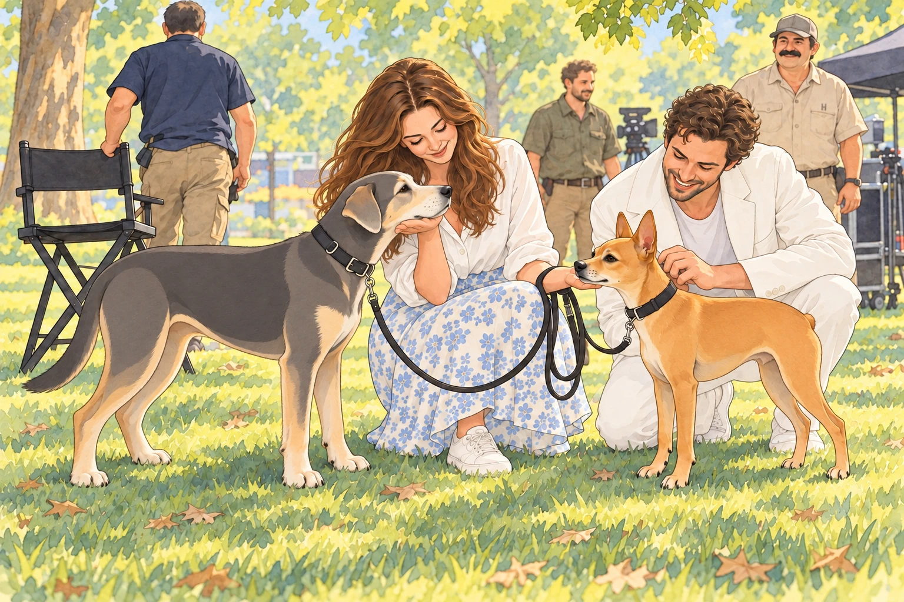
As they walked home that evening, Neet trotted proudly, his tail held high. Buddy nudged him. “You’re a movie star now. Don’t let it go to your head.”
“This is only the beginning,” Neet barked.
Heather laughed, looking down at her two companions. “Just promise me you’ll remember us when you’re famous.”
Neet glanced back at Buddy.
“He held the finish.”
Buddy’s ears lifted.
“Entirely motionless,” Neet added. “Very technical work.”
Buddy let that stand.
As the stars twinkled above, the trio reached the banyan tree, where Shadow and the rest of the gang were waiting. Neet hopped onto his command post.
“Listen up, team. Today, I became a star. Tomorrow, the world!”
The gang barked their approval. Buddy lay beneath the command post and closed his eyes.
“Start with the part where the big dog falls over,” Shadow said.
Neet drew a breath.
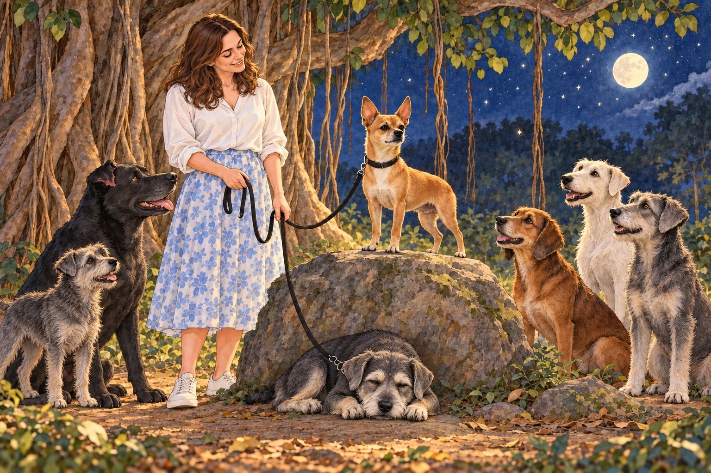
Buddy opened one eye. “It’s a short part. The dog was excellent at staying down.”
Neet began again from the beginning. Buddy tucked his nose between his paws. He knew this performance would have several takes.
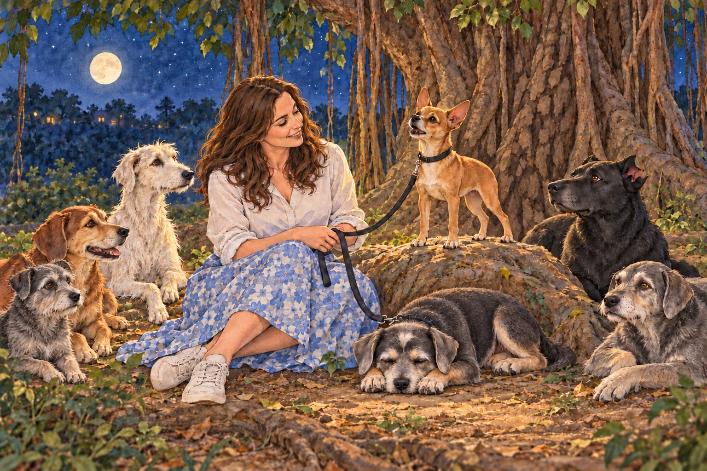